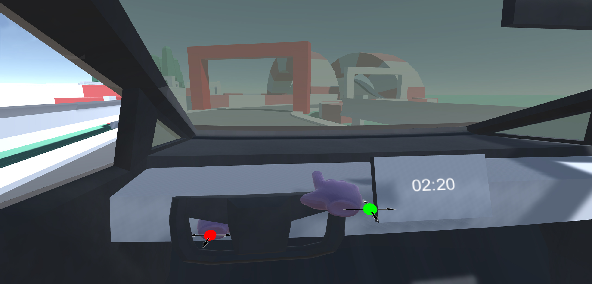

VR Racer
A VR Driving Experience

A VR Driving Experience
Check out this project:
We created this game with the ambition to conduct a user study to evaluate the effect of rest frames (static and dynamic). We tested using a racing game created by ourselves that allowed more control over the rest frame. For this, we had three different viewpoints, each representing a different type of RF or no RF at all.
The player drives a car through a set track. The game has three available viewpoints each with a different type of rest frames or no rest frames at all.
The first-person mode (with a view from inside the car, as this view would constantly have the car interior show around the screen) counts as static rest frames.
The third-person mode with a view from the outside of the car as this view is from the outside of the car, the car itself being in constant movement but always centered on the screen is counted as dynamic rest frames.
The front-view mode with a view from the front of the car has no rest frames present, with the person only being able to view the environment.